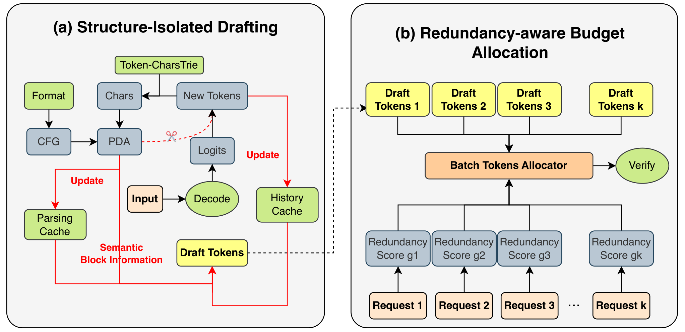

Why it matters왜 중요한가
Almost every efficiency paper in this archive shrinks something — the weights, the cache, the rank. This one shrinks nothing and changes no output: speculative decoding is lossless by construction, because the target model verifies every drafted token. The question it asks is narrower and more uncomfortable: why does that free lunch turn into a tax the moment you serve at a realistic batch size?
이 아카이브의 효율화 논문은 거의 전부 무언가를 줄인다. 가중치, 캐시, 랭크. 이 논문은 아무것도 줄이지 않고 출력도 바꾸지 않는다. speculative decoding은 타깃 모델이 draft된 모든 토큰을 검증하므로 구조상 무손실이다. 대신 이 논문이 던지는 질문은 더 좁고 더 불편하다. 현실적인 배치 크기로 서빙하는 순간 그 공짜 점심이 왜 세금으로 바뀌는가?
The mechanism is arithmetic. Speculative decoding trades verification compute for latency: the target model checks k drafted tokens in one forward pass instead of producing one. At batch size 1 the GPU is memory-bound and that extra compute is genuinely free. At batch size 256 the FFN layers are compute-bound, so every rejected draft token is verification work that bought nothing — and the paper's measurements show three of four state-of-the-art methods ending up below ×1.00 on agent workloads. The agent setting makes this worse than ordinary chat, because rejection rates there are unusually high.
메커니즘은 산술이다. speculative decoding은 검증 연산을 지연시간과 맞바꾼다. 타깃 모델이 토큰 하나를 생성하는 대신 draft된 k개를 한 번의 forward pass로 검증한다. 배치 1에서는 GPU가 메모리 바운드라 그 추가 연산이 실제로 공짜다. 배치 256에서는 FFN 레이어가 연산 바운드가 되므로, 거절된 draft 토큰 하나하나가 아무것도 얻지 못한 검증 작업이 된다. 그리고 논문의 측정에서 최신 기법 네 개 중 셋이 에이전트 워크로드에서 ×1.00 아래로 떨어진다. 에이전트 환경은 일반 대화보다 상황이 더 나쁜데, 거기서는 거절률이 유난히 높기 때문이다.
The reason for the high rejection is the paper's actual observation, and it is a structural one rather than a modeling one. A single agent query is not one generation — it is a chain of requests that pass through reasoning, then a code block, then a tool call, then an interpretation of the tool's output. Draft-model-free methods like NGram and SuffixDecoding retrieve candidate continuations from the global generation history. The paper measures where repeated token spans actually live (Figure 5) and finds they overwhelmingly recur within the same semantic block of the same query; cross-block and cross-query repetition is rare. So the global history is mostly a source of confidently wrong drafts. That is a claim about the shape of agent workloads, not about any particular model, which is why the fix carries over across four model families.
거절률이 높은 이유가 이 논문의 실제 관찰이며, 그것은 모델링이 아니라 구조에 관한 것이다. 에이전트의 한 질의는 하나의 생성이 아니다. 추론을 거쳐 코드 블록으로, 다시 툴 호출로, 그리고 툴 출력의 해석으로 이어지는 요청들의 사슬이다. NGram이나 SuffixDecoding 같은 draft 모델 없는 기법들은 후보 연속열을 전역 생성 이력에서 가져온다. 논문은 반복되는 토큰 구간이 실제로 어디에 있는지 측정하고(Figure 5), 그것이 압도적으로 같은 질의의 같은 의미 블록 안에서 재등장하며 블록 간·질의 간 반복은 드물다는 것을 확인한다. 즉 전역 이력은 대체로 확신에 찬 오답 draft의 공급원이다. 이는 특정 모델이 아니라 에이전트 워크로드의 형태에 관한 주장이고, 그래서 이 해법이 네 개의 모델 계열에 걸쳐 이전된다.

By the numbers핵심 숫자
The main result핵심 결과
| Method | Deep Research | Code Gen | GAIA | SWE-Bench |
|---|---|---|---|---|
| Normal (no speculation) | 201.43 (×1.00) | 289.26 (×1.00) | 247.67 (×1.00) | 351.22 (×1.00) |
| EAGLE-3 | 125.71 (×0.62) | 161.34 (×0.56) | 112.16 (×0.45) | 198.81 (×0.57) |
| NGram | 158.91 (×0.79) | 175.19 (×0.61) | 109.22 (×0.44) | 253.36 (×0.72) |
| SuffixDecoding | 196.54 (×0.98) | 295.85 (×1.02) | 187.79 (×0.76) | 319.73 (×0.91) |
| AgentSpec | 297.54 (×1.48) | 584.43 (×2.02) | 295.76 (×1.19) | 595.20 (×1.69) |
The two ideas두 개의 아이디어
Structure-isolated drafting
The agent app hands the server a structure identifier Si = {agent id, query id, block tags} — block tags being start/end string pairs like ```python…``` or <tool_call>…</tool_call>. The server keeps one lightweight pushdown automaton per (agent, query) and feeds it every new token, so it always knows the active block. Drafts are then retrieved only from H(agent, query, block), never from global history. The engineering catch is that block tags are strings while generation emits subword tokens, and calling the tokenizer per decode step is prohibitive in vLLM; AgentSpec borrows XGrammar's trick and keeps a cached token-to-string map so the conversion is O(1) amortized.
에이전트 앱이 서버에 구조 식별자 Si = {에이전트 id, 질의 id, 블록 태그}를 넘긴다. 블록 태그는 ```python…```이나 <tool_call>…</tool_call> 같은 시작/끝 문자열 쌍이다. 서버는 (에이전트, 질의)마다 가벼운 푸시다운 오토마타를 하나씩 두고 새 토큰을 모두 먹여, 현재 활성 블록을 항상 알고 있다. 이후 draft는 전역 이력이 아니라 오직 H(에이전트, 질의, 블록)에서만 가져온다. 공학적 난점은 블록 태그는 문자열인데 생성은 서브워드 토큰으로 나오고, vLLM에서 디코딩 스텝마다 토크나이저를 부르는 건 감당이 안 된다는 점이다. AgentSpec은 XGrammar의 수법을 빌려 토큰→문자열 매핑을 캐시해 변환을 amortized O(1)로 만든다.
Redundancy-aware budget allocation
Instead of a fixed speculation length, the batch gets a total budget Bt = ⌊α / bz⌋ that shrinks as batch size grows — encoding the fact that headroom disappears once the FFN is compute-bound. That budget is split by a redundancy score g(c,n) = (c/n)·p(n), where n is how many historical continuations matched and c how many of them agree on the same prefix; p(n) is a saturation term that discounts a 1-of-1 "consensus". The paper validates the premise separately (Figure 6): higher redundancy really does predict higher acceptance, and the correlation tightens as n grows. Each request gets Li = max(|CTi*|, Bt·gi/Σgj), so even a low-scoring request still drafts its single most confident prefix.
고정된 speculation 길이 대신, 배치 전체가 Bt = ⌊α / bz⌋라는 총예산을 받는다. 배치가 커질수록 줄어드는 형태로, FFN이 연산 바운드가 되면 여유가 사라진다는 사실을 식에 새겨 넣은 것이다. 이 예산은 중복도 점수 g(c,n) = (c/n)·p(n)로 쪼갠다. n은 이력에서 매칭된 연속열 개수, c는 그중 같은 prefix에 동의한 개수이며, p(n)은 1개 중 1개짜리 "합의"를 깎아내리는 포화 항이다. 논문은 이 전제를 따로 검증한다(Figure 6). 중복도가 높으면 실제로 수락률이 높고, n이 커질수록 상관이 뚜렷해진다. 각 요청은 Li = max(|CTi*|, Bt·gi/Σgj)를 받으므로, 점수가 낮은 요청도 가장 확신하는 prefix 하나는 draft한다.
How it works어떻게 작동하나
- The agent declares its grammar. 에이전트가 자기 문법을 선언한다. Three extra fields are added to the vLLM request —
agent_id,query_id, andstructure, the last being the paired delimiters of the blocks this agent emits. No retraining, no draft model, no change to the served weights.vLLM 요청에 세 필드가 추가된다.agent_id,query_id, 그리고 이 에이전트가 내보내는 블록들의 구분자 쌍인structure. 재학습도, draft 모델도, 서빙 가중치 변경도 없다. - A PDA tracks the active block. PDA가 활성 블록을 추적한다. Each newly decoded token is converted to characters through the cached trie and pushed into that request's automaton, whose state names the semantic block currently being generated — reasoning, code, tool call, math.새로 디코딩된 토큰은 캐시된 트라이를 거쳐 문자열로 변환되어 해당 요청의 오토마타로 들어가고, 그 상태가 지금 생성 중인 의미 블록을 지목한다. 추론, 코드, 툴 호출, 수식.
- Drafts come from that block only. draft는 그 블록에서만 나온다. The history cache is partitioned by (agent, query, block); candidate continuations are read from the matching partition, and if it is empty the request simply drafts nothing this step rather than guessing from elsewhere.이력 캐시는 (에이전트, 질의, 블록)으로 분할되어 있고, 후보 연속열은 일치하는 분할에서만 읽는다. 비어 있으면 다른 데서 추측하는 대신 이번 스텝은 그냥 draft를 만들지 않는다.
- Budget is scored and split. 예산에 점수를 매겨 나눈다. Before verification the server computes gi for every request in the batch from consensus among its retrieved candidates, derives the batch budget from the current batch size, and sets each draft length proportionally.검증 직전 서버는 배치의 모든 요청에 대해, 검색된 후보들 사이의 합의로부터 gi를 계산하고, 현재 배치 크기에서 배치 예산을 도출한 뒤 각 draft 길이를 비례 배분한다.
- One verification pass, unchanged semantics. 검증은 한 번, 의미는 그대로. The target model verifies the whole batch's drafts together. Because verification is the standard speculative-decoding acceptance test, the output distribution is untouched — all the gain is in how few tokens get thrown away. Measured overhead of the new machinery is under 2 ms per step.타깃 모델이 배치 전체의 draft를 한꺼번에 검증한다. 검증이 표준 speculative decoding 수락 검사 그대로이므로 출력 분포는 건드려지지 않는다. 이득은 전부 버려지는 토큰이 얼마나 적은가에서 나온다. 새로 추가된 기계장치의 실측 오버헤드는 스텝당 2ms 미만이다.
What to take away그래서, 가져갈 것
The headline is not "AgentSpec is 2× faster" — it is that the published speculative-decoding numbers you have been reading do not survive batch 256. EAGLE-3 at ×0.45 on GAIA is the finding worth carrying around; if you have been assuming speculative decoding is a free win in your serving stack, measure it at your actual batch size before believing it.
헤드라인은 "AgentSpec이 2배 빠르다"가 아니다. 지금까지 읽어온 speculative decoding 수치들이 배치 256에서 살아남지 못한다는 것이다. GAIA에서 EAGLE-3가 ×0.45라는 사실이 들고 다닐 만한 발견이다. 자기 서빙 스택에서 speculative decoding이 공짜 이득이라고 가정해왔다면, 믿기 전에 실제 배치 크기에서 재보라.
The transferable idea is partitioning the draft cache by workload structure, not the PDA itself. Any setting where one session emits heterogeneous segments — RAG with retrieved-passage blocks, structured JSON generation, multi-turn tool loops — has the same "confidently wrong draft from the wrong segment" failure, and the same cheap fix.
이전 가능한 아이디어는 PDA 자체가 아니라 워크로드 구조로 draft 캐시를 분할한다는 것이다. 한 세션이 이질적인 구간들을 내보내는 환경이라면 — 검색된 문단 블록이 있는 RAG, 구조화된 JSON 생성, 멀티턴 툴 루프 — 똑같이 "엉뚱한 구간에서 온 확신에 찬 오답 draft" 실패를 겪고, 똑같이 값싼 해법이 통한다.
It composes with everything this archive has been reading. AgentSpec touches the decoding schedule, so it is orthogonal to KV-cache compression (CommitKV, PuzzleKV, AnchorKV) and to low-rank weight compression — and unlike those, it is exactly lossless. A serving stack could run all three layers at once, which also means nobody has yet measured what happens when a compressed cache changes the redundancy statistics AgentSpec's budget allocator depends on.
이 아카이브가 읽어온 것들과 조합된다. AgentSpec은 디코딩 스케줄을 건드리므로 KV 캐시 압축(CommitKV, PuzzleKV, AnchorKV)이나 저랭크 가중치 압축과 직교하고, 그것들과 달리 정확히 무손실이다. 서빙 스택은 세 층을 동시에 돌릴 수 있다. 그리고 이는 압축된 캐시가 AgentSpec의 예산 할당기가 의존하는 중복도 통계를 바꿔놓을 때 무슨 일이 생기는지 아직 아무도 재보지 않았다는 뜻이기도 하다.